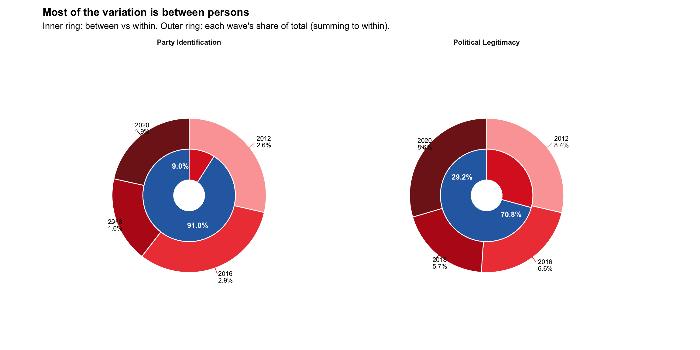
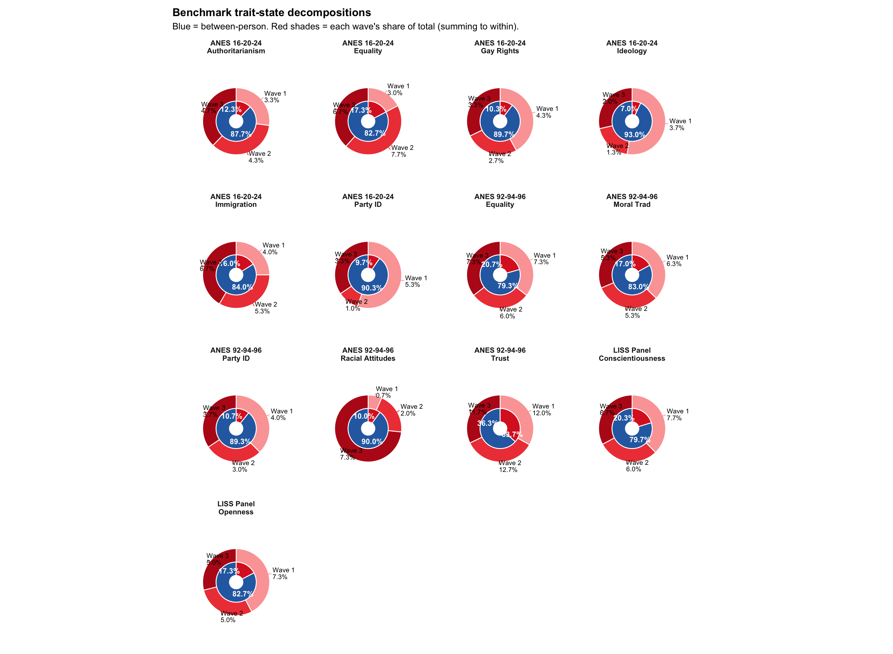
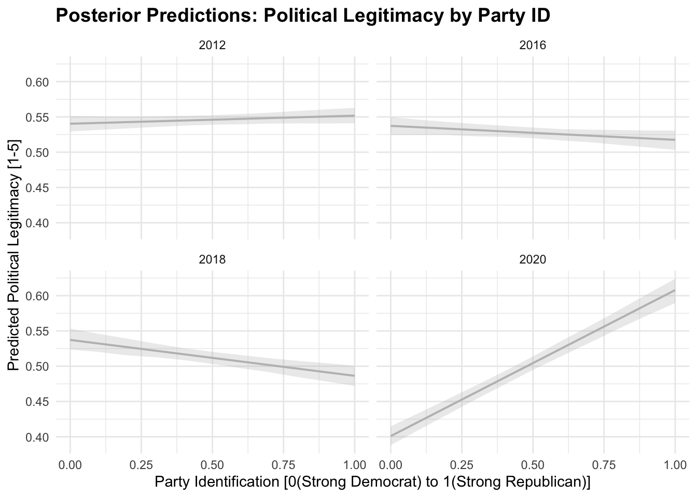
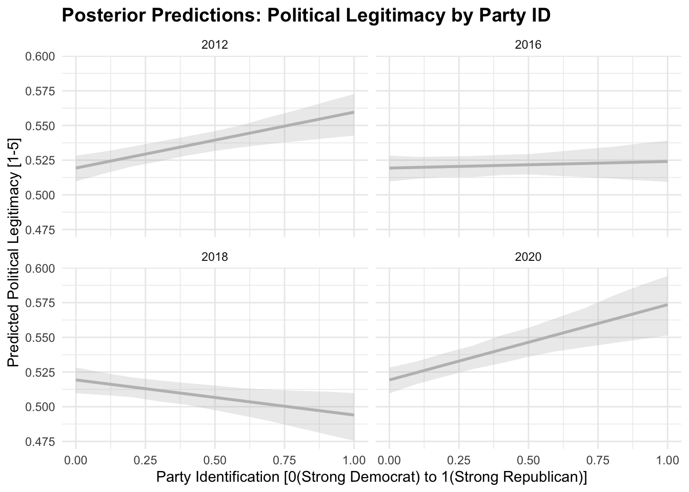
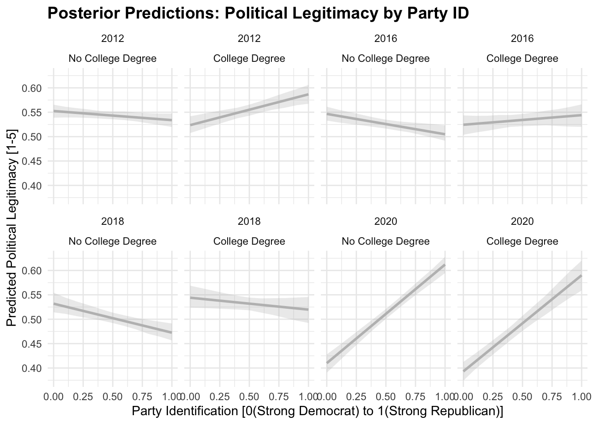

identifier party_identification_2012 ideology_2012 female_2012 college_2012
1 353 3 4 0 0
2 6134 6 4 0 0
3 6163 3 4 0 0
4 7087 1 1 1 1
5 7526 3 1 0 0
6 7693 6 5 1 0
nonwhite_2012 live_our_government_2012 system_needs_changes_2012
1 1 3 3
2 1 3 3
3 0 3 3
4 1 2 2
5 0 3 1
6 0 5 2
system_represents_interests_2012 critical_of_system_2012 wave_year_2012
1 3 2 2012
2 3 3 2012
3 3 3 2012
4 2 2 2012
5 1 1 2012
6 5 2 2012
wave_year_2016 party_identification_2016 ideology_2016 female_2016
1 2016 2 4 0
2 2016 5 4 0
3 NA NA NA NA
4 NA NA NA NA
5 2016 4 1 0
6 2016 5 6 1
college_2016 nonwhite_2016 live_our_government_2016 system_needs_changes_2016
1 0 1 2 2
2 0 1 4 2
3 NA NA NA NA
4 NA NA NA NA
5 0 0 1 1
6 0 0 5 3
system_represents_interests_2016 critical_of_system_2016
1 2 2
2 3 2
3 NA NA
4 NA NA
5 1 1
6 5 2
party_identification_2018 wave_year_2018 ideology_2018 female_2018
1 NA NA NA NA
2 6 2018 4 0
3 NA NA NA NA
4 NA NA NA NA
5 4 2018 1 0
6 NA NA NA NA
college_2018 nonwhite_2018 live_our_government_2018 system_needs_changes_2018
1 NA NA NA NA
2 0 1 4 2
3 NA NA NA NA
4 NA NA NA NA
5 0 0 3 1
6 NA NA NA NA
system_represents_interests_2018 critical_of_system_2018 wave_year_2020
1 NA NA NA
2 3 3 NA
3 NA NA NA
4 NA NA NA
5 1 1 NA
6 NA NA NA
party_identification_2020 ideology_2020 female_2020 college_2020
1 NA NA NA NA
2 NA NA NA NA
3 NA NA NA NA
4 NA NA NA NA
5 NA NA NA NA
6 NA NA NA NA
nonwhite_2020 live_our_government_2020 system_needs_changes_2020
1 NA NA NA
2 NA NA NA
3 NA NA NA
4 NA NA NA
5 NA NA NA
6 NA NA NA
system_represents_interests_2020 critical_of_system_2020
1 NA NA
2 NA NA
3 NA NA
4 NA NA
5 NA NA
6 NA NA7 The ISCAP Panel
These data are downloaded from data verse (Hopkins and Mutz 2022). The data include the following variables.
Gender(1 = Female)College(1 = College degree or higher)Nonwhite(1 = Non-white)Party Identification(7-point scale,7 = “Strong Republican”)Ideology(7-point scale, 7 = “Extremely Conservative”)Political System Legitimacy(4-item battery, 5 point Agree - Disagree scale)
- “I would rather live under our system of government than any other that I can think of”
- “At present I feel very critical of our political system”
- “The system does a good job representing the interests of people like me”
- “Feel critical of our political system” (\(\alpha \approx 0.6\), see below for exact estimates)
7.1 Data
7.2 Legitimacy Scale
The political legitimacy scale is composed of four items.
Reliability analysis
Call: psych::alpha(x = select(upenn, live_our_government_2012, critical_of_system_2012,
system_needs_changes_2012, system_represents_interests_2012))
raw_alpha std.alpha G6(smc) average_r S/N ase mean sd median_r
0.62 0.62 0.65 0.29 1.7 0.013 3.2 0.7 0.17
95% confidence boundaries
lower alpha upper
Feldt 0.6 0.62 0.64
Duhachek 0.6 0.62 0.65
Reliability if an item is dropped:
raw_alpha std.alpha G6(smc) average_r S/N
live_our_government_2012 0.54 0.54 0.48 0.28 1.2
critical_of_system_2012 0.58 0.59 0.57 0.32 1.4
system_needs_changes_2012 0.57 0.58 0.56 0.31 1.4
system_represents_interests_2012 0.51 0.50 0.45 0.25 1.0
alpha se var.r med.r
live_our_government_2012 0.016 0.034 0.18
critical_of_system_2012 0.015 0.080 0.18
system_needs_changes_2012 0.015 0.082 0.17
system_represents_interests_2012 0.016 0.044 0.13
Item statistics
n raw.r std.r r.cor r.drop mean sd
live_our_government_2012 2549 0.68 0.70 0.60 0.42 4.3 0.96
critical_of_system_2012 2545 0.67 0.66 0.48 0.36 2.5 1.07
system_needs_changes_2012 2548 0.67 0.66 0.48 0.38 2.2 1.01
system_represents_interests_2012 2538 0.72 0.73 0.64 0.45 3.8 1.02
Non missing response frequency for each item
1 2 3 4 5 miss
live_our_government_2012 0.01 0.04 0.15 0.25 0.54 0.02
critical_of_system_2012 0.19 0.34 0.30 0.11 0.05 0.02
system_needs_changes_2012 0.27 0.44 0.18 0.08 0.03 0.02
system_represents_interests_2012 0.02 0.09 0.21 0.38 0.29 0.03 raw_alpha std.alpha G6(smc) average_r
live_our_government_2016 0.5472277 0.5477265 0.4807009 0.2875889
critical_of_system_2016 0.5909525 0.5910350 0.5710011 0.3251143
system_needs_changes_2016 0.5800910 0.5901880 0.5701145 0.3243462
system_represents_interests_2016 0.5185837 0.5122900 0.4555590 0.2593322
S/N alpha se var.r med.r
live_our_government_2016 1.211052 0.01544822 0.03082119 0.1887831
critical_of_system_2016 1.445197 0.01415070 0.07684809 0.1887831
system_needs_changes_2016 1.440144 0.01474676 0.07704931 0.1836971
system_represents_interests_2016 1.050399 0.01621489 0.04000682 0.1452460 raw_alpha std.alpha G6(smc) average_r
live_our_government_2018 0.5439546 0.5463639 0.4994770 0.2864635
critical_of_system_2018 0.5328013 0.5328980 0.5237679 0.2755128
system_needs_changes_2018 0.5448513 0.5560505 0.5409201 0.2945341
system_represents_interests_2018 0.4932378 0.4794167 0.4558539 0.2348738
S/N alpha se var.r med.r
live_our_government_2018 1.204410 0.01566761 0.04990861 0.1829792
critical_of_system_2018 1.140860 0.01604274 0.08770000 0.1335673
system_needs_changes_2018 1.252509 0.01586875 0.07987501 0.1829792
system_represents_interests_2018 0.920922 0.01693038 0.07114886 0.0847147 raw_alpha std.alpha G6(smc) average_r
live_our_government_2020 0.6321628 0.6364805 0.5550060 0.3685386
critical_of_system_2020 0.6704717 0.6689568 0.6244874 0.4024802
system_needs_changes_2020 0.6442895 0.6465854 0.6115880 0.3788226
system_represents_interests_2020 0.5848126 0.5833031 0.5133185 0.3181548
S/N alpha se var.r med.r
live_our_government_2020 1.750884 0.01261402 0.01436718 0.3095550
critical_of_system_2020 2.020754 0.01121128 0.04625078 0.3095550
system_needs_changes_2020 1.829538 0.01226564 0.05657014 0.2895966
system_represents_interests_2020 1.399826 0.01412638 0.02724593 0.2495074I created both wide and long versions of the data.
The number of rows in the wide format data is: 2606 The complete data has 671 complete cases.There are 1935 rows with missing data.upenn_long <- upenn %>%
pivot_longer(
cols = -c(identifier),
names_to = c(".value", "wave"),
names_pattern = "(.+)_(\\d+)$" # Regex to extract _2012, etc part
) %>%
arrange(identifier, wave) |>
mutate(
party_identification = (party_identification - 1)/6,
ideology = (ideology - 1) /6
)
head(upenn_long)# A tibble: 6 × 13
identifier wave party_identification ideology female college nonwhite
<dbl> <chr> <dbl> <dbl> <dbl> <dbl> <dbl>
1 353 2012 0.333 0.5 0 0 1
2 353 2016 0.167 0.5 0 0 1
3 353 2018 NA NA NA NA NA
4 353 2020 NA NA NA NA NA
5 6134 2012 0.833 0.5 0 0 1
6 6134 2016 0.667 0.5 0 0 1
# ℹ 6 more variables: live_our_government <dbl>, system_needs_changes <dbl>,
# system_represents_interests <dbl>, critical_of_system <dbl>,
# wave_year <dbl>, political_legitimacy <dbl>legitimacy_data = upenn_long |>
dplyr::select(identifier, wave,
political_legitimacy,
live_our_government,
critical_of_system,
system_needs_changes,
system_represents_interests)
naniar::miss_var_summary(legitimacy_data |> select(-c(identifier, wave)))# A tibble: 5 × 3
variable n_miss pct_miss
<chr> <int> <num>
1 system_represents_interests 4015 38.5
2 critical_of_system 4002 38.4
3 system_needs_changes 3999 38.4
4 live_our_government 3997 38.3
5 political_legitimacy 3982 38.2Below I display the missing data patterns across all variables and respondents in the dataset. Dark cells indicate missing values.
7.3 Missing Data by Wave
# A tibble: 24 × 4
# Groups: wave [4]
wave variable n_miss pct_miss
<chr> <chr> <int> <num>
1 2012 system_represents_interests 68 2.61
2 2012 critical_of_system 61 2.34
3 2012 system_needs_changes 58 2.23
4 2012 live_our_government 57 2.19
5 2012 political_legitimacy 52 2.00
6 2012 identifier 0 0
7 2016 critical_of_system 935 35.9
8 2016 system_needs_changes 934 35.8
9 2016 live_our_government 933 35.8
10 2016 system_represents_interests 933 35.8
# ℹ 14 more rows7.4 Autocorrelation
Ignoring time dependence, and just fitting an OLS regression:
lm(political_legitimacy ~ female + college + party_identification,
data = upenn_long) |>
summary()
Call:
lm(formula = political_legitimacy ~ female + college + party_identification,
data = upenn_long)
Residuals:
Min 1Q Median 3Q Max
-0.54523 -0.09803 -0.01614 0.10469 0.48637
Coefficients:
Estimate Std. Error t value Pr(>|t|)
(Intercept) 0.513626 0.004935 104.068 < 2e-16 ***
female 0.002517 0.004457 0.565 0.572
college 0.004165 0.004676 0.891 0.373
party_identification 0.029087 0.006173 4.712 2.51e-06 ***
---
Signif. codes: 0 '***' 0.001 '**' 0.01 '*' 0.05 '.' 0.1 ' ' 1
Residual standard error: 0.1777 on 6416 degrees of freedom
(4004 observations deleted due to missingness)
Multiple R-squared: 0.00347, Adjusted R-squared: 0.003004
F-statistic: 7.446 on 3 and 6416 DF, p-value: 5.643e-057.5 The Intraclass Correlation Coefficient (ICC)
The Analysis of Variance model simply decomposes the total variance for a variable into within and between components. The ICC (\(\rho\)) is the share of total variance attributable to stable between-person differences. We can easily calculate this on the long data using a multilevel model in lme4
\[ ext{ICC} \;=\; \frac{\sigma^2_{\text{between}}}{\sigma^2_{\text{between}} + \sigma^2_{\text{within}}} \]
library(lme4)
# Null random-intercept models, one per outcome
m_party <- lmer(party_identification ~ 1 + (1 | identifier),
REML = FALSE, data = upenn_long)
m_legit <- lmer(political_legitimacy ~ 1 + (1 | identifier),
REML = FALSE, data = upenn_long)
icc_from_lmer <- function(fit) {
vc <- as.data.frame(VarCorr(fit))
between <- vc$vcov[vc$grp == "identifier"]
within <- vc$vcov[vc$grp == "Residual"]
data.frame(
between_var = between,
within_var = within,
total_var = between + within,
ICC = between / (between + within)
)
}
icc_tbl <- bind_rows(
cbind(variable = "Party Identification", icc_from_lmer(m_party)),
cbind(variable = "Political Legitimacy", icc_from_lmer(m_legit))
)
icc_tbl |>
gt() |>
fmt_number(columns = c(between_var, within_var, total_var, ICC),
decimals = 3) |>
cols_label(
variable = "Variable",
between_var = "Between (σ²_u)",
within_var = "Within (σ²_e)",
total_var = "Total",
ICC = "ICC"
) |>
tab_header(title = "Analysis of Variance Components")| Analysis of Variance Components | ||||
| Variable | Between (σ²_u) | Within (σ²_e) | Total | ICC |
|---|---|---|---|---|
| Party Identification | 0.110 | 0.020 | 0.130 | 0.848 |
| Political Legitimacy | 0.016 | 0.016 | 0.032 | 0.512 |
Political legitimacy is less stable than PID, which doesn’t change much from wave to wave.
7.6 Validation with the TSO
Another way to estimate these component is with a TSO model.
# Trait factors (between-person)
T_x =~ 1*x1 + 1*x2 + 1*x3 + 1*x4
T_y =~ 1*y1 + 1*y2 + 1*y3 + 1*y4
# Trait variances and covariance
T_x ~~ T_var_x*T_x
T_y ~~ T_var_y*T_y
T_x ~~ T_cov_xy*T_y
# State variances (within-person)
x1 ~~ s_var_x*x1
y1 ~~ s_var_y*y1
x2 ~~ s_var_x*x2
y2 ~~ s_var_y*y2
x3 ~~ s_var_x*x3
y3 ~~ s_var_y*y3
x4 ~~ s_var_x*x4
y4 ~~ s_var_y*y4
# Within-time state covariances
x1 ~~ s_cov_xy*y1
x2 ~~ s_cov_xy*y2
x3 ~~ s_cov_xy*y3
x4 ~~ s_cov_xy*y4This produces identical ICC estimates.
tso_syntax <- crossLagR::estimateTSO(waves = 4)
tso_data <- upenn |>
dplyr::select(identifier,
x1 = party_identification_2012,
x2 = party_identification_2016,
x3 = party_identification_2018,
x4 = party_identification_2020,
y1 = political_legitimacy_2012,
y2 = political_legitimacy_2016,
y3 = political_legitimacy_2018,
y4 = political_legitimacy_2020) |>
mutate(across(c(x1, x2, x3, x4), ~ (.x - 1) / 6))
## Use lavaan::sem() rather than lavaan::lavaan(): the bare lavaan() engine
## with meanstructure = TRUE allocates intercept parameters but does NOT free
## the observed-variable intercepts, so variances are computed around 0
## instead of around the variable mean and the trait variance is inflated by
## mean(x)^2. sem() auto-frees them.
tso_fit <- lavaan::sem(tso_syntax, data = tso_data, missing = "ML")
pe <- lavaan::parameterEstimates(tso_fit)
grab <- function(lab) pe$est[pe$label == lab][1]
tibble::tibble(
Variable = c("Party Identification", "Political Legitimacy"),
Trait_var = c(grab("T_var_x"), grab("T_var_y")),
State_var = c(grab("s_var_x"), grab("s_var_y"))
) |>
mutate(Total_var = Trait_var + State_var,
ICC = Trait_var / Total_var) |>
gt() |>
fmt_number(columns = c(Trait_var, State_var, Total_var, ICC), decimals = 3) |>
cols_label(Trait_var = "Trait (between)",
State_var = "State (within)",
Total_var = "Total",
ICC = "ICC") |>
tab_header(title = "Trait-State-Occasion variance decomposition")| Trait-State-Occasion variance decomposition | ||||
| Variable | Trait (between) | State (within) | Total | ICC |
|---|---|---|---|---|
| Party Identification | 0.110 | 0.020 | 0.130 | 0.848 |
| Political Legitimacy | 0.016 | 0.015 | 0.032 | 0.521 |
fitMeasures(tso_fit, c("chisq", "df", "pvalue", "cfi", "tli", "rmsea", "srmr")) |>
as.data.frame() |>
tibble::rownames_to_column("Measure") |>
rename(Value = 2) |>
gt() |>
fmt_number(columns = Value, decimals = 3) |>
tab_header(title = "TSO Fit Measures")| TSO Fit Measures | |
| Measure | Value |
|---|---|
| chisq | 646.635 |
| df | 30.000 |
| pvalue | 0.000 |
| cfi | 0.920 |
| tli | 0.925 |
| rmsea | 0.089 |
| srmr | 0.120 |
Figure Figure 7.1 separates the decomposition into two layers. The inner ring shows how much of the total variance is between persons versus within persons. The outer ring then disaggregates the within-person share into each wave’s contribution to that within total.

The next chunk declares the benchmark trait-state results from the table so they can be plotted in the same format.
benchmark_trait_data <- tibble::tribble(
~study, ~variable, ~trait_wave1, ~trait_wave2, ~trait_wave3, ~ar_w1_w2, ~ar_w2_w3,
"ANES 92-94-96", "Party ID", 0.88, 0.91, 0.89, 0.14, 0.14,
"ANES 92-94-96", "Equality", 0.78, 0.82, 0.78, 0.13, 0.12,
"ANES 92-94-96", "Moral Trad", 0.81, 0.84, 0.84, 0.13, 0.13,
"ANES 92-94-96", "Trust", 0.64, 0.62, 0.65, 0.28, 0.29,
"ANES 92-94-96", "Racial Attitudes", 0.98, 0.94, 0.78, 0.00, 0.11,
"ANES 16-20-24", "Party ID", 0.84, 0.97, 0.90, 0.24, 0.26,
"ANES 16-20-24", "Authoritarianism", 0.90, 0.87, 0.86, 0.10, 0.10,
"ANES 16-20-24", "Equality", 0.91, 0.77, 0.80, 0.17, 0.18,
"ANES 16-20-24", "Ideology", 0.89, 0.96, 0.94, 0.12, 0.00,
"ANES 16-20-24", "Gay Rights", 0.87, 0.92, 0.90, 0.08, 0.00,
"ANES 16-20-24", "Immigration", 0.88, 0.84, 0.80, 0.15, 0.15,
"LISS Panel", "Openness", 0.78, 0.85, 0.85, 0.11, 0.11,
"LISS Panel", "Conscientiousness", 0.77, 0.82, 0.80, 0.07, 0.07
)
benchmark_trait_data# A tibble: 13 × 7
study variable trait_wave1 trait_wave2 trait_wave3 ar_w1_w2 ar_w2_w3
<chr> <chr> <dbl> <dbl> <dbl> <dbl> <dbl>
1 ANES 92-94-96 Party ID 0.88 0.91 0.89 0.14 0.14
2 ANES 92-94-96 Equality 0.78 0.82 0.78 0.13 0.12
3 ANES 92-94-96 Moral Tr… 0.81 0.84 0.84 0.13 0.13
4 ANES 92-94-96 Trust 0.64 0.62 0.65 0.28 0.29
5 ANES 92-94-96 Racial A… 0.98 0.94 0.78 0 0.11
6 ANES 16-20-24 Party ID 0.84 0.97 0.9 0.24 0.26
7 ANES 16-20-24 Authorit… 0.9 0.87 0.86 0.1 0.1
8 ANES 16-20-24 Equality 0.91 0.77 0.8 0.17 0.18
9 ANES 16-20-24 Ideology 0.89 0.96 0.94 0.12 0
10 ANES 16-20-24 Gay Righ… 0.87 0.92 0.9 0.08 0
11 ANES 16-20-24 Immigrat… 0.88 0.84 0.8 0.15 0.15
12 LISS Panel Openness 0.78 0.85 0.85 0.11 0.11
13 LISS Panel Conscien… 0.77 0.82 0.8 0.07 0.07Figure Figure 7.2 applies the same nested-pie logic to the benchmark table. Here the inner ring uses the average reported trait fraction across waves as the between-person share of total variance, and the outer ring allocates the within-person share across waves in proportion to each wave’s residual state variance.

7.7 Arellano-Bond Dynamic Panel Model
The Arelleno-Bond estimator uses GMM on the first-differenced data – to remove the unit effects – with lagged variables serving as instruments for the lagged right-hand side differenced variables.
The code below fits two separate models: * Political legitimacy as the outcome and party identification as the predictor * Party identification as the outcome and political legitimacy as the predictor. Both models include a lag of the dependent variable on the right-hand side to capture autoregression. The instrument set includes lags 2 and 3 of the dependent variable, and lag 1 of the predictor variable. This is a strong assumption for party id – typically the Arellano-Bond instrument matrix unfolds such that wave 1 of the predictor is used as an instrument for the change from wave 2 to wave 3, wave 1 and 2 are used to instrument the change from wave 2 to 3, and wave 1, 2, and 3 are used to instrument the change from wave 3 to 4. Party ID is so stable that it is exogenous. The results show a strong autoregressive effect for both variables, but no evidence of cross-lagged effects.
Oneway (individual) effect Two-steps model Difference GMM
Call:
pgmm(formula = political_legitimacy ~ lag(political_legitimacy,
1) + lag(party_identification, 1) | lag(political_legitimacy,
2:3) | lag(party_identification, 1), data = ab_data, effect = "individual",
model = "twosteps", transformation = "d")
Unbalanced Panel: n = 2581, T = 1-4, N = 6420
Number of Observations Used: 1755
Residuals:
Min. 1st Qu. Median Mean 3rd Qu. Max.
-1.153319 0.000000 0.000000 -0.001451 0.000000 1.134764
Coefficients:
Estimate Std. Error z-value Pr(>|z|)
lag(political_legitimacy, 1) 0.296874 0.102817 2.8874 0.003884 **
lag(party_identification, 1) -0.020663 0.024845 -0.8317 0.405576
---
Signif. codes: 0 '***' 0.001 '**' 0.01 '*' 0.05 '.' 0.1 ' ' 1
Sargan test: chisq(2) = 6.377727 (p-value = 0.041219)
Autocorrelation test (1): normal = -7.394763 (p-value = 1.4166e-13)
Wald test for coefficients: chisq(2) = 9.175794 (p-value = 0.010174)Oneway (individual) effect Two-steps model Difference GMM
Call:
pgmm(formula = party_identification ~ lag(political_legitimacy,
1) + lag(party_identification, 1) | lag(political_legitimacy,
2:3) | lag(party_identification, 2:3), data = ab_data, effect = "individual",
model = "twosteps", transformation = "d")
Unbalanced Panel: n = 2581, T = 1-4, N = 6420
Number of Observations Used: 1693
Residuals:
Min. 1st Qu. Median Mean 3rd Qu. Max.
-0.978198 0.000000 0.000000 0.001356 0.000000 0.912585
Coefficients:
Estimate Std. Error z-value Pr(>|z|)
lag(political_legitimacy, 1) -0.095134 0.068592 -1.3870 0.1655
lag(party_identification, 1) -0.262245 0.062658 -4.1854 2.847e-05 ***
---
Signif. codes: 0 '***' 0.001 '**' 0.01 '*' 0.05 '.' 0.1 ' ' 1
Sargan test: chisq(3) = 1.356834 (p-value = 0.71568)
Autocorrelation test (1): normal = -1.182618 (p-value = 0.23696)
Wald test for coefficients: chisq(2) = 19.81095 (p-value = 4.9901e-05)The model is useful, but it does assume something that is problematic in this context: The correlation between the lagged IV and the DV should change from wave to wave; in this case, from election-to-election, with presidents of both political parties. If a Democrat is in office, Republicans should become more critical; if a Republican is in office, Democrats should be more critical.
A similar model, estimated via Maximum Likelihood versus Generalized Method of Moments, is the Bollen and Brand dynamic panel model, which is described in the next section.
7.8 Bollen and Brand Dynamic Panel Model
The Bollen and Brand (2010) dynamic panel model captures autoregression, cross-lagged effects, and unobserved heterogeneity (latent fixed effects) within an SEM framework (see also Dishop and DeShon 2018). The diagram below shows the reciprocal cross-lag specification with 4 waves.
Because we freely estimate the AR and CL parameters, there are far more statistically significant coefficients – they just change signs on occasion, which is why they were, on average, non-significant in the Arellano-Bond model. And lagged legitimacy never predicts PID – which makes sense, because PID is stable, but its correlation with legitimacy is not.
# Ensure SEM-wide aliases exist even if chunks are re-ordered.
if (!exists("upenn_sem")) {
upenn_sem <- upenn |>
rename(
x1 = party_identification_2012,
x2 = party_identification_2016,
x3 = party_identification_2018,
x4 = party_identification_2020,
y1 = political_legitimacy_2012,
y2 = political_legitimacy_2016,
y3 = political_legitimacy_2018,
y4 = political_legitimacy_2020
)
}
if (!exists("rename_var")) {
var_labels <- c(
"p" = "Party ID", "q" = "Legitimacy",
"x" = "Party ID", "y" = "Legitimacy"
)
wave_labels <- c("1" = "2012", "2" = "2016", "3" = "2018", "4" = "2020")
rename_var <- function(x) {
letter <- gsub("[0-9]", "", x)
num <- gsub("[^0-9]", "", x)
label <- var_labels[letter]
year <- wave_labels[num]
ifelse(!is.na(label) & !is.na(year), paste0(label, " (", year, ")"), x)
}
}
bb_syntax <- estimateBollen_and_Brand(waves = 4, x_effect = "lagged",
x_autoregression = TRUE, y_effect_on_x = TRUE,
constrain_coefficients = FALSE)
bb_fit <- lavaan::sem(bb_syntax, data = upenn_sem, missing = "ML")
parameterEstimates(bb_fit, standardized = TRUE) |>
filter(op == "~") |>
mutate(lhs = rename_var(lhs), rhs = rename_var(rhs)) |>
select(lhs, op, rhs, est, se, z, pvalue, std.all) |>
gt() |>
cols_label(lhs = "Outcome", op = "", rhs = "Predictor",
est = "Estimate", se = "SE", z = "z", pvalue = "p", std.all = "Std. (all)") |>
fmt_number(columns = c(est, se, z, std.all), decimals = 3) |>
fmt_number(columns = pvalue, decimals = 4) |>
tab_header(title = "Bollen & Brand Dynamic Panel Estimates")| Bollen & Brand Dynamic Panel Estimates | |||||||
| Outcome | Predictor | Estimate | SE | z | p | Std. (all) | |
|---|---|---|---|---|---|---|---|
| Legitimacy (2016) | ~ | Legitimacy (2012) | 0.183 | 0.035 | 5.261 | 0.0000 | 0.178 |
| Legitimacy (2016) | ~ | Party ID (2012) | −0.008 | 0.004 | −2.287 | 0.0222 | −0.098 |
| Legitimacy (2018) | ~ | Legitimacy (2016) | 0.164 | 0.044 | 3.739 | 0.0002 | 0.165 |
| Legitimacy (2018) | ~ | Party ID (2016) | −0.013 | 0.004 | −3.707 | 0.0002 | −0.158 |
| Legitimacy (2020) | ~ | Legitimacy (2018) | 0.099 | 0.047 | 2.109 | 0.0349 | 0.095 |
| Legitimacy (2020) | ~ | Party ID (2018) | 0.032 | 0.004 | 8.535 | 0.0000 | 0.370 |
| Party ID (2016) | ~ | Party ID (2012) | 0.063 | 0.032 | 1.942 | 0.0521 | 0.062 |
| Party ID (2016) | ~ | Legitimacy (2012) | 0.124 | 0.212 | 0.582 | 0.5606 | 0.010 |
| Party ID (2018) | ~ | Party ID (2016) | 0.060 | 0.034 | 1.758 | 0.0788 | 0.060 |
| Party ID (2018) | ~ | Legitimacy (2016) | −0.579 | 0.222 | −2.611 | 0.0090 | −0.048 |
| Party ID (2020) | ~ | Party ID (2018) | 0.116 | 0.035 | 3.301 | 0.0010 | 0.110 |
| Party ID (2020) | ~ | Legitimacy (2018) | −0.298 | 0.245 | −1.220 | 0.2225 | −0.024 |
fitMeasures(bb_fit, c("chisq", "df", "pvalue", "cfi", "tli", "rmsea", "srmr")) |>
as.data.frame() |>
tibble::rownames_to_column("Measure") |>
rename(Value = 2) |>
gt() |>
fmt_number(columns = Value, decimals = 3) |>
tab_header(title = "Bollen & Brand Fit Measures")| Bollen & Brand Fit Measures | |
| Measure | Value |
|---|---|
| chisq | 200.087 |
| df | 12.000 |
| pvalue | 0.000 |
| cfi | 0.976 |
| tli | 0.943 |
| rmsea | 0.078 |
| srmr | 0.027 |
7.9 What happens when these effects are ignored?
7.9.1 CLPM
7.9.2 Modeled Directly, RICLPM
7.9.3
7.10 CLPM, RICLPM, and Fixed Effects lavaan model
The crossLagR package includes functions to generate lavaan syntax for the Cross-Lagged Panel Model (CLPM), the Random Intercept Cross-Lagged Panel Model (RICLPM), and the Allison-Chamberlain Fixed Effects model. Each function expects data with variables named x1, x2, ... and y1, y2, ..., so we first rename the wide-format variables.
# Rename to x1-x4 (party_identification) and y1-y4 (political_legitimacy)
upenn_sem <- upenn |>
rename(
x1 = party_identification_2012,
x2 = party_identification_2016,
x3 = party_identification_2018,
x4 = party_identification_2020,
y1 = political_legitimacy_2012,
y2 = political_legitimacy_2016,
y3 = political_legitimacy_2018,
y4 = political_legitimacy_2020
)7.10.1
By all accounts, party identification and legitimacy are strongly defined by stable between-person differences. The standard CLPM does not separate stable between-person differences from within-person dynamics.
| CLPM Parameter Estimates | |||||||
| Outcome | Predictor | Estimate | SE | z | p | Std. (all) | |
|---|---|---|---|---|---|---|---|
| Party ID (2016) | ~ | Party ID (2012) | 0.891 | 0.012 | 77.319 | 0.0000 | 0.717 |
| Party ID (2016) | ~ | Legitimacy (2012) | 0.007 | 0.002 | 4.688 | 0.0000 | 0.070 |
| Legitimacy (2016) | ~ | Legitimacy (2012) | 0.891 | 0.011 | 78.893 | 0.0000 | 0.858 |
| Legitimacy (2016) | ~ | Party ID (2012) | 0.777 | 0.086 | 8.988 | 0.0000 | 0.061 |
| Party ID (2018) | ~ | Party ID (2016) | 0.895 | 0.014 | 66.130 | 0.0000 | 0.785 |
| Party ID (2018) | ~ | Legitimacy (2016) | 0.006 | 0.002 | 3.628 | 0.0003 | 0.056 |
| Legitimacy (2018) | ~ | Legitimacy (2016) | 0.888 | 0.013 | 70.077 | 0.0000 | 0.859 |
| Legitimacy (2018) | ~ | Party ID (2016) | 0.676 | 0.101 | 6.711 | 0.0000 | 0.064 |
| Party ID (2020) | ~ | Party ID (2018) | 0.645 | 0.016 | 40.859 | 0.0000 | 0.626 |
| Party ID (2020) | ~ | Legitimacy (2018) | 0.043 | 0.002 | 22.435 | 0.0000 | 0.394 |
| Legitimacy (2020) | ~ | Legitimacy (2018) | 0.937 | 0.015 | 63.738 | 0.0000 | 0.877 |
| Legitimacy (2020) | ~ | Party ID (2018) | 0.481 | 0.120 | 4.000 | 0.0001 | 0.048 |
| CLPM Fit Measures | |
| Measure | Value |
|---|---|
| chisq | 1,528.041 |
| df | 24.000 |
| pvalue | 0.000 |
| cfi | 0.805 |
| tli | 0.772 |
| rmsea | 0.155 |
| srmr | 0.340 |
7.11 Models that Account for Unit Effects
7.11.1 Arellano-Bond Dynamic Panel Model
7.12 Bollen and Brand Dynamic Panel Model
7.12.1 RI-CLPM
The RI-CLPM adds random intercepts to separate stable trait variance from within-person dynamics.
riclpm_syntax <- estimateRICLPM(waves = 4)
riclpm_fit <- lavaan::lavaan(riclpm_syntax, data = upenn_sem, missing = "ML")
parameterEstimates(riclpm_fit, standardized = TRUE) |>
filter(op == "~") |>
mutate(lhs = rename_var(lhs), rhs = rename_var(rhs)) |>
select(lhs, op, rhs, est, se, z, pvalue, std.all) |>
gt() |>
cols_label(lhs = "Outcome", op = "", rhs = "Predictor",
est = "Estimate", se = "SE", z = "z", pvalue = "p", std.all = "Std. (all)") |>
fmt_number(columns = c(est, se, z, std.all), decimals = 3) |>
fmt_number(columns = pvalue, decimals = 4) |>
tab_header(title = "RI-CLPM Parameter Estimates")| RI-CLPM Parameter Estimates | |||||||
| Outcome | Predictor | Estimate | SE | z | p | Std. (all) | |
|---|---|---|---|---|---|---|---|
| Party ID (2016) | ~ | Party ID (2012) | 0.059 | 0.030 | 1.997 | 0.0459 | 0.059 |
| Party ID (2016) | ~ | Legitimacy (2012) | −0.288 | 0.190 | −1.521 | 0.1284 | −0.045 |
| Legitimacy (2016) | ~ | Legitimacy (2012) | 0.263 | 0.035 | 7.497 | 0.0000 | 0.254 |
| Legitimacy (2016) | ~ | Party ID (2012) | 0.001 | 0.004 | 0.145 | 0.8849 | 0.004 |
| Party ID (2018) | ~ | Party ID (2016) | 0.059 | 0.030 | 1.997 | 0.0459 | 0.059 |
| Party ID (2018) | ~ | Legitimacy (2016) | −0.288 | 0.190 | −1.521 | 0.1284 | −0.046 |
| Legitimacy (2018) | ~ | Legitimacy (2016) | 0.263 | 0.035 | 7.497 | 0.0000 | 0.262 |
| Legitimacy (2018) | ~ | Party ID (2016) | 0.001 | 0.004 | 0.145 | 0.8849 | 0.004 |
| Party ID (2020) | ~ | Party ID (2018) | 0.059 | 0.030 | 1.997 | 0.0459 | 0.059 |
| Party ID (2020) | ~ | Legitimacy (2018) | −0.288 | 0.190 | −1.521 | 0.1284 | −0.046 |
| Legitimacy (2020) | ~ | Legitimacy (2018) | 0.263 | 0.035 | 7.497 | 0.0000 | 0.263 |
| Legitimacy (2020) | ~ | Party ID (2018) | 0.001 | 0.004 | 0.145 | 0.8849 | 0.004 |
fitMeasures(riclpm_fit, c("chisq", "df", "pvalue", "cfi", "tli", "rmsea", "srmr")) |>
as.data.frame() |>
tibble::rownames_to_column("Measure") |>
rename(Value = 2) |>
gt() |>
fmt_number(columns = Value, decimals = 3) |>
tab_header(title = "RI-CLPM Fit Measures")| RI-CLPM Fit Measures | |
| Measure | Value |
|---|---|
| chisq | 688.071 |
| df | 32.000 |
| pvalue | 0.000 |
| cfi | 0.915 |
| tli | 0.926 |
| rmsea | 0.089 |
| srmr | 0.123 |
7.12.2 ALT Model (Autoregressive Latent Trajectory)
The ALT model combines latent growth curves with autoregressive and cross-lagged dynamics on the scores themselves. Unlike the LCM-SR, growth factors here accumulate through the AR process (Bollen and Brand 2010).
alt_syntax <- estimateALT(waves = 4)
alt_fit <- lavaan::lavaan(alt_syntax, data = upenn_sem, missing = "ML", meanstructure = TRUE)
parameterEstimates(alt_fit, standardized = TRUE) |>
filter(op == "~") |>
mutate(lhs = rename_var(lhs), rhs = rename_var(rhs)) |>
select(lhs, op, rhs, est, se, z, pvalue, std.all) |>
gt() |>
cols_label(lhs = "Outcome", op = "", rhs = "Predictor",
est = "Estimate", se = "SE", z = "z", pvalue = "p", std.all = "Std. (all)") |>
fmt_number(columns = c(est, se, z, std.all), decimals = 3) |>
fmt_number(columns = pvalue, decimals = 4) |>
tab_header(title = "ALT Parameter Estimates")| ALT Parameter Estimates | |||||||
| Outcome | Predictor | Estimate | SE | z | p | Std. (all) | |
|---|---|---|---|---|---|---|---|
| Party ID (2016) | ~ | Party ID (2012) | −0.329 | 0.036 | −9.039 | 0.0000 | −0.325 |
| Party ID (2016) | ~ | Legitimacy (2012) | 0.926 | 0.696 | 1.331 | 0.1832 | 0.074 |
| Legitimacy (2016) | ~ | Legitimacy (2012) | 1.643 | 0.033 | 49.264 | 0.0000 | 1.495 |
| Legitimacy (2016) | ~ | Party ID (2012) | 0.022 | 0.014 | 1.563 | 0.1181 | 0.244 |
| Party ID (2018) | ~ | Party ID (2016) | −0.329 | 0.036 | −9.039 | 0.0000 | −0.334 |
| Party ID (2018) | ~ | Legitimacy (2016) | 0.926 | 0.696 | 1.331 | 0.1832 | 0.083 |
| Legitimacy (2018) | ~ | Legitimacy (2016) | 1.643 | 0.033 | 49.264 | 0.0000 | 1.937 |
| Legitimacy (2018) | ~ | Party ID (2016) | 0.022 | 0.014 | 1.563 | 0.1181 | 0.291 |
| Party ID (2020) | ~ | Party ID (2018) | −0.329 | 0.036 | −9.039 | 0.0000 | −0.313 |
| Party ID (2020) | ~ | Legitimacy (2018) | 0.926 | 0.696 | 1.331 | 0.1832 | 0.067 |
| Legitimacy (2020) | ~ | Legitimacy (2018) | 1.643 | 0.033 | 49.264 | 0.0000 | 1.348 |
| Legitimacy (2020) | ~ | Party ID (2018) | 0.022 | 0.014 | 1.563 | 0.1181 | 0.235 |
fitMeasures(alt_fit, c("chisq", "df", "pvalue", "cfi", "tli", "rmsea", "srmr")) |>
as.data.frame() |>
tibble::rownames_to_column("Measure") |>
rename(Value = 2) |>
gt() |>
fmt_number(columns = Value, decimals = 3) |>
tab_header(title = "ALT Fit Measures")| ALT Fit Measures | |
| Measure | Value |
|---|---|
| chisq | 93.713 |
| df | 10.000 |
| pvalue | 0.000 |
| cfi | 0.989 |
| tli | 0.970 |
| rmsea | 0.057 |
| srmr | 0.048 |
7.12.3 LCM-SR (Latent Curve Model with Structured Residuals)
The LCM-SR first removes the growth trajectory, then models the deviations from those curves with AR/CL dynamics (Usami, Murayama, and Hamaker 2019). Growth factors have only direct effects on the observed scores.
lcmsr_syntax <- estimateLCMSR(waves = 4)
lcmsr_fit <- lavaan::lavaan(lcmsr_syntax, data = upenn_sem, missing = "ML", meanstructure = TRUE)
parameterEstimates(lcmsr_fit, standardized = TRUE) |>
filter(op == "~") |>
mutate(lhs = rename_var(lhs), rhs = rename_var(rhs)) |>
select(lhs, op, rhs, est, se, z, pvalue, std.all) |>
gt() |>
cols_label(lhs = "Outcome", op = "", rhs = "Predictor",
est = "Estimate", se = "SE", z = "z", pvalue = "p", std.all = "Std. (all)") |>
fmt_number(columns = c(est, se, z, std.all), decimals = 3) |>
fmt_number(columns = pvalue, decimals = 4) |>
tab_header(title = "LCM-SR Parameter Estimates")| LCM-SR Parameter Estimates | |||||||
| Outcome | Predictor | Estimate | SE | z | p | Std. (all) | |
|---|---|---|---|---|---|---|---|
| Party ID (2016) | ~ | Party ID (2012) | −0.156 | 0.045 | −3.493 | 0.0005 | −0.134 |
| Party ID (2016) | ~ | Legitimacy (2012) | −0.821 | 0.279 | −2.939 | 0.0033 | −0.101 |
| Legitimacy (2016) | ~ | Legitimacy (2012) | 0.043 | 0.048 | 0.896 | 0.3703 | 0.034 |
| Legitimacy (2016) | ~ | Party ID (2012) | −0.011 | 0.005 | −2.061 | 0.0393 | −0.059 |
| Party ID (2018) | ~ | Party ID (2016) | −0.156 | 0.045 | −3.493 | 0.0005 | −0.155 |
| Party ID (2018) | ~ | Legitimacy (2016) | −0.821 | 0.279 | −2.939 | 0.0033 | −0.128 |
| Legitimacy (2018) | ~ | Legitimacy (2016) | 0.043 | 0.048 | 0.896 | 0.3703 | 0.043 |
| Legitimacy (2018) | ~ | Party ID (2016) | −0.011 | 0.005 | −2.061 | 0.0393 | −0.068 |
| Party ID (2020) | ~ | Party ID (2018) | −0.156 | 0.045 | −3.493 | 0.0005 | −0.156 |
| Party ID (2020) | ~ | Legitimacy (2018) | −0.821 | 0.279 | −2.939 | 0.0033 | −0.128 |
| Legitimacy (2020) | ~ | Legitimacy (2018) | 0.043 | 0.048 | 0.896 | 0.3703 | 0.043 |
| Legitimacy (2020) | ~ | Party ID (2018) | −0.011 | 0.005 | −2.061 | 0.0393 | −0.069 |
fitMeasures(lcmsr_fit, c("chisq", "df", "pvalue", "cfi", "tli", "rmsea", "srmr")) |>
as.data.frame() |>
tibble::rownames_to_column("Measure") |>
rename(Value = 2) |>
gt() |>
fmt_number(columns = Value, decimals = 3) |>
tab_header(title = "LCM-SR Fit Measures")| LCM-SR Fit Measures | |
| Measure | Value |
|---|---|
| chisq | 415.318 |
| df | 20.000 |
| pvalue | 0.000 |
| cfi | 0.949 |
| tli | 0.928 |
| rmsea | 0.087 |
| srmr | 0.101 |
7.12.4 Latent Change Score Model
The Latent Change Score model parameterizes wave-to-wave change as a latent variable, regressed on prior levels of both variables to capture coupled dynamics (McArdle 2009).
lchange_syntax <- estimateLChange(waves = 4, variable_type = "bivariate")
lchange_fit <- lavaan::lavaan(lchange_syntax, data = upenn_sem, missing = "ML", meanstructure = TRUE)
parameterEstimates(lchange_fit, standardized = TRUE) |>
filter(op == "~") |>
mutate(lhs = rename_var(lhs), rhs = rename_var(rhs)) |>
select(lhs, op, rhs, est, se, z, pvalue, std.all) |>
gt() |>
cols_label(lhs = "Outcome", op = "", rhs = "Predictor",
est = "Estimate", se = "SE", z = "z", pvalue = "p", std.all = "Std. (all)") |>
fmt_number(columns = c(est, se, z, std.all), decimals = 3) |>
fmt_number(columns = pvalue, decimals = 4) |>
tab_header(title = "Latent Change Parameter Estimates")| Latent Change Parameter Estimates | |||||||
| Outcome | Predictor | Estimate | SE | z | p | Std. (all) | |
|---|---|---|---|---|---|---|---|
| cf_x2 | ~ | cf_x1 | 1.000 | 0.000 | NA | NA | 1.029 |
| cf_x3 | ~ | cf_x2 | 1.000 | 0.000 | NA | NA | 1.028 |
| cf_x4 | ~ | cf_x3 | 1.000 | 0.000 | NA | NA | 0.937 |
| ld_x2 | ~ | cf_x1 | −2.935 | NA | NA | NA | −91.131 |
| ld_x3 | ~ | cf_x2 | −2.935 | NA | NA | NA | −79.763 |
| ld_x4 | ~ | cf_x3 | −2.935 | NA | NA | NA | −25.401 |
| cf_y2 | ~ | cf_y1 | 1.000 | 0.000 | NA | NA | 0.995 |
| cf_y3 | ~ | cf_y2 | 1.000 | 0.000 | NA | NA | 1.045 |
| cf_y4 | ~ | cf_y3 | 1.000 | 0.000 | NA | NA | 0.812 |
| ld_y2 | ~ | cf_y1 | 3.072 | NA | NA | NA | 19.894 |
| ld_y3 | ~ | cf_y2 | 3.072 | NA | NA | NA | 13.383 |
| ld_y4 | ~ | cf_y3 | 3.072 | NA | NA | NA | 3.603 |
| ld_x2 | ~ | cf_y1 | 8.399 | NA | NA | NA | 17.592 |
| ld_y2 | ~ | cf_x1 | −1.425 | NA | NA | NA | −136.803 |
| ld_x3 | ~ | cf_y2 | 8.399 | NA | NA | NA | 15.928 |
| ld_y3 | ~ | cf_x2 | −1.425 | NA | NA | NA | −88.967 |
| ld_x4 | ~ | cf_y3 | 8.399 | NA | NA | NA | 4.990 |
| ld_y4 | ~ | cf_x3 | −1.425 | NA | NA | NA | −24.346 |
if (lchange_fit@Fit@converged) {
fitMeasures(lchange_fit, c("chisq", "df", "pvalue", "cfi", "tli", "rmsea", "srmr")) |>
as.data.frame() |>
tibble::rownames_to_column("Measure") |>
rename(Value = 2) |>
gt() |>
fmt_number(columns = Value, decimals = 3) |>
tab_header(title = "Latent Change Fit Measures")
} else {
cat("Model did not converge; fit measures unavailable.\n")
}Model did not converge; fit measures unavailable.7.12.5 Model Comparison
fit_models <- list(
"CLPM" = clpm_fit,
"RI-CLPM" = riclpm_fit,
"Bollen & Brand" = bb_fit,
"ALT" = alt_fit,
"LCM-SR" = lcmsr_fit,
"Latent Change" = lchange_fit,
"TSO" = tso_fit
)
# Helper to safely get fit measures (returns NA if model didn't converge)
safe_fit_measure <- function(fit, measure_name) {
tryCatch({
fitMeasures(fit, measure_name)
}, error = function(e) {
NA_real_
})
}
fit_table <- data.frame(
Model = names(fit_models),
Chi_sq = sapply(fit_models, function(f) safe_fit_measure(f, "chisq")),
df = sapply(fit_models, function(f) safe_fit_measure(f, "df")),
p = sapply(fit_models, function(f) safe_fit_measure(f, "pvalue")),
CFI = sapply(fit_models, function(f) safe_fit_measure(f, "cfi")),
TLI = sapply(fit_models, function(f) safe_fit_measure(f, "tli")),
RMSEA = sapply(fit_models, function(f) safe_fit_measure(f, "rmsea")),
SRMR = sapply(fit_models, function(f) safe_fit_measure(f, "srmr")),
AIC = sapply(fit_models, AIC),
BIC = sapply(fit_models, BIC),
row.names = NULL
)
fit_table |> gt() |>
cols_label(Chi_sq = "Chi-sq") |>
fmt_number(columns = c(Chi_sq, AIC, BIC), decimals = 1) |>
fmt_number(columns = df, decimals = 0) |>
fmt_number(columns = c(p, CFI, TLI, RMSEA, SRMR), decimals = 3) |>
tab_header(title = "Model Fit Comparison")| Model Fit Comparison | |||||||||
| Model | Chi-sq | df | p | CFI | TLI | RMSEA | SRMR | AIC | BIC |
|---|---|---|---|---|---|---|---|---|---|
| CLPM | 1,528.0 | 24 | 0.000 | 0.805 | 0.772 | 0.155 | 0.340 | 18,431.9 | 18,549.2 |
| RI-CLPM | 688.1 | 32 | 0.000 | 0.915 | 0.926 | 0.089 | 0.123 | 17,576.0 | 17,646.3 |
| Bollen & Brand | 200.1 | 12 | 0.000 | 0.976 | 0.943 | 0.078 | 0.027 | 17,128.0 | 17,315.7 |
| ALT | 93.7 | 10 | 0.000 | 0.989 | 0.970 | 0.057 | 0.048 | 17,025.6 | 17,225.0 |
| LCM-SR | 415.3 | 20 | 0.000 | 0.949 | 0.928 | 0.087 | 0.101 | 17,327.2 | 17,468.0 |
| Latent Change | NA | NA | NA | NA | NA | NA | NA | 17,141.7 | 17,259.0 |
| TSO | 646.6 | 30 | 0.000 | 0.920 | 0.925 | 0.089 | 0.120 | −5,851.1 | −5,769.0 |
7.13 Unit Fixed Effects: Dynamic Panel Bias
Call:
lm(formula = within_legitimacy ~ within_female + within_college +
within_party, data = data_panel)
Residuals:
Min 1Q Median 3Q Max
-0.59376 -0.04764 -0.00001 0.04838 0.54368
Coefficients:
Estimate Std. Error t value Pr(>|t|)
(Intercept) 0.000006212 0.001202093 0.005 0.9959
within_female 0.075541356 0.072075028 1.048 0.2946
within_college -0.003935012 0.018213456 -0.216 0.8290
within_party 0.018180330 0.011032306 1.648 0.0994 .
---
Signif. codes: 0 '***' 0.001 '**' 0.01 '*' 0.05 '.' 0.1 ' ' 1
Residual standard error: 0.09632 on 6416 degrees of freedom
(4004 observations deleted due to missingness)
Multiple R-squared: 0.0005985, Adjusted R-squared: 0.0001312
F-statistic: 1.281 on 3 and 6416 DF, p-value: 0.2791Compare this to the one-way fixed effect model in the plm package.
Oneway (individual) effect Within Model
Call:
plm(formula = political_legitimacy ~ female + college + party_identification,
data = data_panel, effect = "individual", model = "within")
Unbalanced Panel: n = 2581, T = 1-4, N = 6420
Residuals:
Min. 1st Qu. Median 3rd Qu. Max.
-0.593750 -0.047665 0.000000 0.048397 0.543695
Coefficients:
Estimate Std. Error t-value Pr(>|t|)
female 0.0756309 0.0931678 0.8118 0.4170
college -0.0040813 0.0238395 -0.1712 0.8641
party_identification 0.0182587 0.0142855 1.2781 0.2013
Total Sum of Squares: 59.459
Residual Sum of Squares: 59.424
R-Squared: 0.0006016
Adj. R-Squared: -0.67235
F-statistic: 0.76971 on 3 and 3836 DF, p-value: 0.510857.14 Fitting the Two Way Fixed Effects
We could also demean the variable by wave to account for time fixed effects. Here is the plm output.
Twoways effects Within Model
Call:
plm(formula = political_legitimacy ~ female + college + party_identification,
data = data_panel, effect = "twoways", model = "within")
Unbalanced Panel: n = 2581, T = 1-4, N = 6420
Residuals:
Min. 1st Qu. Median 3rd Qu. Max.
-0.572309 -0.049959 0.000000 0.047297 0.522073
Coefficients:
Estimate Std. Error t-value Pr(>|t|)
female 0.059346 0.092007 0.6450 0.5190
college 0.013463 0.023600 0.5705 0.5684
party_identification 0.024252 0.014117 1.7179 0.0859 .
---
Signif. codes: 0 '***' 0.001 '**' 0.01 '*' 0.05 '.' 0.1 ' ' 1
Total Sum of Squares: 57.929
Residual Sum of Squares: 57.871
R-Squared: 0.0010027
Adj. R-Squared: -0.67299
F-statistic: 1.28244 on 3 and 3833 DF, p-value: 0.27859Partisanship is stable, but it should color responses in election year. If we extend the two way fixed effect model to include interactions between wave and party_identification, we can capture some of this time varying effect.
Oneway (individual) effect Within Model
Call:
plm(formula = political_legitimacy ~ female + college + party_identification:as.factor(wave) +
as.factor(wave), data = data_panel, effect = "individual",
model = "within")
Unbalanced Panel: n = 2581, T = 1-4, N = 6420
Residuals:
Min. 1st Qu. Median 3rd Qu. Max.
-0.502868 -0.048931 0.000000 0.048222 0.489013
Coefficients:
Estimate Std. Error t-value
female 0.0449683 0.0879085 0.5115
college 0.0145374 0.0225529 0.6446
as.factor(wave)2016 -0.0043890 0.0067595 -0.6493
as.factor(wave)2018 -0.0082597 0.0076189 -1.0841
as.factor(wave)2020 -0.1413772 0.0081197 -17.4116
party_identification:as.factor(wave)2012 -0.0052869 0.0152955 -0.3457
party_identification:as.factor(wave)2016 -0.0365867 0.0151667 -2.4123
party_identification:as.factor(wave)2018 -0.0624392 0.0163717 -3.8138
party_identification:as.factor(wave)2020 0.1926144 0.0162397 11.8607
Pr(>|t|)
female 0.609005
college 0.519231
as.factor(wave)2016 0.516181
as.factor(wave)2018 0.278385
as.factor(wave)2020 < 0.00000000000000022 ***
party_identification:as.factor(wave)2012 0.729625
party_identification:as.factor(wave)2016 0.015899 *
party_identification:as.factor(wave)2018 0.000139 ***
party_identification:as.factor(wave)2020 < 0.00000000000000022 ***
---
Signif. codes: 0 '***' 0.001 '**' 0.01 '*' 0.05 '.' 0.1 ' ' 1
Total Sum of Squares: 59.459
Residual Sum of Squares: 52.765
R-Squared: 0.11258
Adj. R-Squared: -0.4873
F-statistic: 53.9862 on 9 and 3830 DF, p-value: < 0.0000000000000002227.15 Fitting the Random Intercept Model
Let’s fit a variety of random effects models, using brms.

Call:
lm(formula = political_legitimacy ~ female + college + party_identification,
data = filter(data_panel, wave == 2012))
Residuals:
Min 1Q Median 3Q Max
-0.55668 -0.10060 0.00582 0.10195 0.46938
Coefficients:
Estimate Std. Error t value Pr(>|t|)
(Intercept) 0.530615 0.007600 69.822 <0.0000000000000002 ***
female 0.007481 0.006922 1.081 0.2799
college 0.008614 0.007245 1.189 0.2346
party_identification 0.018586 0.009693 1.917 0.0553 .
---
Signif. codes: 0 '***' 0.001 '**' 0.01 '*' 0.05 '.' 0.1 ' ' 1
Residual standard error: 0.1741 on 2550 degrees of freedom
(52 observations deleted due to missingness)
Multiple R-squared: 0.002167, Adjusted R-squared: 0.0009932
F-statistic: 1.846 on 3 and 2550 DF, p-value: 0.1367
Call:
lm(formula = political_legitimacy ~ female + college + party_identification,
data = filter(data_panel, wave == 2016))
Residuals:
Min 1Q Median 3Q Max
-0.53442 -0.09327 -0.02270 0.09836 0.47730
Coefficients:
Estimate Std. Error t value Pr(>|t|)
(Intercept) 0.533942 0.009439 56.570 <0.0000000000000002 ***
female 0.002062 0.008518 0.242 0.809
college 0.002355 0.008962 0.263 0.793
party_identification -0.011237 0.011755 -0.956 0.339
---
Signif. codes: 0 '***' 0.001 '**' 0.01 '*' 0.05 '.' 0.1 ' ' 1
Residual standard error: 0.1735 on 1671 degrees of freedom
(931 observations deleted due to missingness)
Multiple R-squared: 0.0006866, Adjusted R-squared: -0.001107
F-statistic: 0.3827 on 3 and 1671 DF, p-value: 0.7655
Call:
lm(formula = political_legitimacy ~ female + college + party_identification,
data = filter(data_panel, wave == 2018))
Residuals:
Min 1Q Median 3Q Max
-0.55396 -0.09222 0.00245 0.10279 0.51138
Coefficients:
Estimate Std. Error t value Pr(>|t|)
(Intercept) 0.530431 0.010888 48.719 < 0.0000000000000002 ***
female 0.007514 0.009727 0.772 0.439986
college 0.023527 0.010213 2.304 0.021409 *
party_identification -0.049323 0.013551 -3.640 0.000284 ***
---
Signif. codes: 0 '***' 0.001 '**' 0.01 '*' 0.05 '.' 0.1 ' ' 1
Residual standard error: 0.1675 on 1197 degrees of freedom
(1405 observations deleted due to missingness)
Multiple R-squared: 0.01823, Adjusted R-squared: 0.01577
F-statistic: 7.407 on 3 and 1197 DF, p-value: 0.00006438
Call:
lm(formula = political_legitimacy ~ female + college + party_identification,
data = filter(data_panel, wave == 2020))
Residuals:
Min 1Q Median 3Q Max
-0.60768 -0.10768 0.00928 0.12049 0.46185
Coefficients:
Estimate Std. Error t value Pr(>|t|)
(Intercept) 0.42025 0.01311 32.063 <0.0000000000000002 ***
female -0.02117 0.01172 -1.806 0.0712 .
college -0.01969 0.01233 -1.598 0.1104
party_identification 0.20860 0.01581 13.193 <0.0000000000000002 ***
---
Signif. codes: 0 '***' 0.001 '**' 0.01 '*' 0.05 '.' 0.1 ' ' 1
Residual standard error: 0.1833 on 986 degrees of freedom
(1616 observations deleted due to missingness)
Multiple R-squared: 0.1656, Adjusted R-squared: 0.1631
F-statistic: 65.24 on 3 and 986 DF, p-value: < 0.00000000000000022An alternative way to do this is to specify a random intercept for both wave and identifier, with random coefficients for partisanship and wave. The way it is currently specified is the wave variable is fixed, all observations pull around a common value. This now captures heterogeneity in the alignment of partisanship and legitimacy over time.
\[\begin{eqnarray} y_{it}=b_{0,i}+b_{1,i} x_{it}+ \sum_{t=2012}^{2020}\omega_{1,t} d_{t} + \sum_{t=2012}^{2020}\omega_{2,t} d_{t} x_{it} + e_{it}\\ b_{0,i} \sim N(b_0, \sigma_0^2)\\ b_{1,i} \sim N(b_1, \sigma_1^2) \\ \omega_{1,t} \sim N (\omega_1, \sigma_{\omega_1}^2) \\ \omega_{2,t} \sim N (\omega_2, \sigma_{\omega_2}^2) \\ \end{eqnarray}\]
When the Democratic candidate wins, Democrats are more likely to view the political system as legitimate, and when the Republican candidate wins, Republicans are more likely to view the political system as legitimate.

7.15.1 Expertise, Partisanship, and Political Legitimacy

8 The Cross Lagged Panel Regression
The Cross-Lagged Panel Model
In the CLPM framework, some interesting patterns emerge. It would seem that there is a high degree of autocorrelation for both legitimacy and partisanship. There are also consistent cross lagged effects. Republicans are consistently more likely to view the political system as legitimate. And those who view the political system as legitimate are more likely to identify as Republicans in the next wave.
| CLPM Estimates: Political Legitimacy and Party Identification | ||||
| Outcome | Predictor | Estimate | SE | P_value |
|---|---|---|---|---|
| Legitimacy (2016) | Legitimacy (2012) | 0.904 | 0.016 | 0.000 |
| Legitimacy (2016) | Partisanship (2012) | 0.042 | 0.015 | 0.006 |
| Partisanship (2016) | Partisanship (2012) | 0.899 | 0.019 | 0.000 |
| Partisanship (2016) | Legitimacy (2012) | 0.090 | 0.019 | 0.000 |
| Legitimacy (2018) | Legitimacy (2016) | 0.913 | 0.016 | 0.000 |
| Legitimacy (2018) | Partisanship (2016) | 0.030 | 0.015 | 0.046 |
| Partisanship (2018) | Partisanship (2016) | 0.870 | 0.018 | 0.000 |
| Partisanship (2018) | Legitimacy (2016) | 0.115 | 0.019 | 0.000 |
| Legitimacy (2020) | Legitimacy (2018) | 0.716 | 0.016 | 0.000 |
| Legitimacy (2020) | Partisanship (2018) | 0.276 | 0.015 | 0.000 |
| Partisanship (2020) | Partisanship (2018) | 0.938 | 0.018 | 0.000 |
| Partisanship (2020) | Legitimacy (2018) | 0.057 | 0.020 | 0.004 |
The problem is that both legitimacy and partisanship are highly stable constructs. The RI-CLPM accounts for this by separating stable between-person differences from within-person fluctuations. The RI-CLPM looks like this.
Random Intercept Cross-Lagged Panel Model with 5 waves. The model shows autoregressive paths (solid arrows), cross-lagged effects (solid arrows), within-time correlations (dashed curved arrows), and residual terms (self-loops).
| RI-CLPM Estimates: Political Legitimacy and Party Identification | |||||
| Autoregressive and Cross-Lagged Effects | |||||
| Outcome | Predictor | Estimate | SE | P_value | Sig |
|---|---|---|---|---|---|
| Autoregressive (Legitimacy) | |||||
| Legitimacy (2016) | Legitimacy (2012) | 0.111 | 0.055 | 0.043 | * |
| Legitimacy (2018) | Legitimacy (2016) | −0.077 | 0.058 | 0.188 | |
| Legitimacy (2020) | Legitimacy (2018) | 0.344 | 0.047 | 0.000 | *** |
| Autoregressive (Partisanship) | |||||
| Partisanship (2016) | Partisanship (2012) | 0.314 | 0.048 | 0.000 | *** |
| Partisanship (2018) | Partisanship (2016) | 0.261 | 0.051 | 0.000 | *** |
| Partisanship (2020) | Partisanship (2018) | −0.176 | 0.056 | 0.002 | ** |
| Cross-Lagged | |||||
| Legitimacy (2016) | Partisanship (2012) | −0.087 | 0.058 | 0.131 | |
| Legitimacy (2018) | Partisanship (2016) | −0.220 | 0.070 | 0.002 | ** |
| Legitimacy (2020) | Partisanship (2018) | −0.294 | 0.053 | 0.000 | *** |
| Partisanship (2016) | Legitimacy (2012) | −0.068 | 0.049 | 0.165 | |
| Partisanship (2018) | Legitimacy (2016) | −0.140 | 0.046 | 0.002 | ** |
| Partisanship (2020) | Legitimacy (2018) | 0.081 | 0.051 | 0.116 | |
The model teases apart a constant relationship between x and y by allowing for a dynamic formulation – for instance, we might ask, “if perceptions of legitimacy increase over time, does this lead to a subsequent shift to the political left or political right”? Changes can be modeled in a latent change model.
Latent Growth Model, Linear Trend.
If an individual shifts to the political right (i.e., more Republican) over time, there’s a downward shift in perceptions of legitimacy. IF an individual believes the political system to be legitimate, they are more likely to identify as Republican.
8.1 Change-to-Change and Cross-Lagged Effects
This model includes parameters where change in one variable predicts changes in the other.
| Latent Change Score Model: Political Legitimacy and Party Identification | ||||||
| Level-to-Change, Change-to-Change, and Cross-Lagged Effects (Unconstrained) | ||||||
| Outcome | Wave | Predictor | Estimate | SE | P_Value | alpha |
|---|---|---|---|---|---|---|
| Cross-Lagged (Level→Change) | ||||||
| Legitimacy | y | Partisanship | −0.019 | 0.018 | 0.313 | |
| Legitimacy | y | Partisanship | −0.023 | 0.017 | 0.178 | |
| Legitimacy | y | Partisanship | 0.263 | 0.015 | 0.000 | *** |
| Partisanship | x | Legitimacy | 0.008 | 0.023 | 0.739 | |
| Partisanship | x | Legitimacy | 0.019 | 0.022 | 0.392 | |
| Partisanship | x | Legitimacy | −0.003 | 0.022 | 0.875 | |
| Proportional (Level→Self Change) | ||||||
| Legitimacy | y | Legitimacy | −0.016 | 0.019 | 0.398 | |
| Legitimacy | y | Legitimacy | −0.011 | 0.018 | 0.551 | |
| Legitimacy | y | Legitimacy | −0.241 | 0.017 | 0.000 | *** |
| Partisanship | x | Partisanship | 0.004 | 0.022 | 0.875 | |
| Partisanship | x | Partisanship | −0.006 | 0.021 | 0.774 | |
| Partisanship | x | Partisanship | 0.018 | 0.020 | 0.381 | |
There’s a significant cross-lagged effect in one wave. A Republican in 2016 was substantially more likely to show an increase in perceived legitimacy. The parameters are generally non-significant, suggesting that after we account for stable differences by calculating a mean score, there’s no general trend of increasing or decreasing one’s partisanship or legitimacy over time.
8.1.1 Removing Change-to-Change
This model includes parameters where change in one variable predicts changes in the other.
lavaan 0.6-19 ended normally after 97 iterations
Estimator ML
Optimization method NLMINB
Number of model parameters 34
Number of equality constraints 12
Used Total
Number of observations 715 2606
Model Test User Model:
Test statistic 136.328
Degrees of freedom 22
P-value (Chi-square) 0.000
Parameter Estimates:
Standard errors Standard
Information Expected
Information saturated (h1) model Structured
Latent Variables:
Estimate Std.Err z-value P(>|z|) Std.lv Std.all
cf_x1 =~
x1 1.000 0.334 0.934
cf_x2 =~
x2 1.000 0.342 0.937
cf_x3 =~
x3 1.000 0.347 0.939
cf_x4 =~
x4 1.000 0.359 0.942
ld_x2 =~
cf_x2 1.000 0.198 0.198
ld_x3 =~
cf_x3 1.000 0.195 0.195
ld_x4 =~
cf_x4 1.000 0.189 0.189
cf_y1 =~
y1 1.000 0.128 0.760
cf_y2 =~
y2 1.000 0.136 0.779
cf_y3 =~
y3 1.000 0.144 0.796
cf_y4 =~
y4 1.000 0.147 0.803
ld_y2 =~
cf_y2 1.000 0.378 0.378
ld_y3 =~
cf_y3 1.000 0.358 0.358
ld_y4 =~
cf_y4 1.000 0.758 0.758
Regressions:
Estimate Std.Err z-value P(>|z|) Std.lv Std.all
cf_x2 ~
cf_x1 1.000 0.977 0.977
cf_x3 ~
cf_x2 1.000 0.987 0.987
cf_x4 ~
cf_x3 1.000 0.965 0.965
ld_x2 ~
cf_x1 0.004 0.022 0.157 0.875 0.017 0.017
ld_x3 ~
cf_x2 -0.006 0.021 -0.287 0.774 -0.030 -0.030
ld_x4 ~
cf_x3 0.018 0.020 0.876 0.381 0.090 0.090
cf_y2 ~
cf_y1 1.000 0.943 0.943
cf_y3 ~
cf_y2 1.000 0.944 0.944
cf_y4 ~
cf_y3 1.000 0.976 0.976
ld_y2 ~
cf_y1 -0.016 0.019 -0.844 0.398 -0.039 -0.039
ld_y3 ~
cf_y2 -0.011 0.018 -0.597 0.551 -0.029 -0.029
ld_y4 ~
cf_y3 -0.241 0.017 -14.043 0.000 -0.310 -0.310
ld_x2 ~
cf_y1 0.008 0.023 0.333 0.739 0.014 0.014
ld_y2 ~
cf_x1 -0.019 0.018 -1.010 0.313 -0.121 -0.121
ld_x3 ~
cf_y2 0.019 0.022 0.856 0.392 0.038 0.038
ld_y3 ~
cf_x2 -0.023 0.017 -1.347 0.178 -0.156 -0.156
ld_x4 ~
cf_y3 -0.003 0.022 -0.157 0.875 -0.007 -0.007
ld_y4 ~
cf_x3 0.263 0.015 16.974 0.000 0.817 0.817
Covariances:
Estimate Std.Err z-value P(>|z|) Std.lv Std.all
cf_x1 ~~
cf_y1 0.002 0.002 0.870 0.384 0.044 0.044
.ld_x2 ~~
.ld_y2 (d_c_) -0.000 0.000 -0.410 0.682 -0.046 -0.046
.ld_x3 ~~
.ld_y3 (d_c_) -0.000 0.000 -0.410 0.682 -0.046 -0.046
.ld_x4 ~~
.ld_y4 (d_c_) -0.000 0.000 -0.410 0.682 -0.046 -0.046
Intercepts:
Estimate Std.Err z-value P(>|z|) Std.lv Std.all
cf_x1 0.465 0.013 34.850 0.000 1.393 1.393
.cf_x2 0.000 0.000 0.000
.cf_x3 0.000 0.000 0.000
.cf_x4 0.000 0.000 0.000
.x1 0.000 0.000 0.000
.x2 0.000 0.000 0.000
.x3 0.000 0.000 0.000
.x4 0.000 0.000 0.000
.ld_x2 0.000 0.000 0.000
.ld_x3 0.000 0.000 0.000
.ld_x4 0.000 0.000 0.000
cf_y1 0.548 0.006 87.319 0.000 4.284 4.284
.cf_y2 0.000 0.000 0.000
.cf_y3 0.000 0.000 0.000
.cf_y4 0.000 0.000 0.000
.y1 0.000 0.000 0.000
.y2 0.000 0.000 0.000
.y3 0.000 0.000 0.000
.y4 0.000 0.000 0.000
.ld_y2 0.000 0.000 0.000
.ld_y3 0.000 0.000 0.000
.ld_y4 0.000 0.000 0.000
Variances:
Estimate Std.Err z-value P(>|z|) Std.lv Std.all
cf_x1 0.112 0.007 16.494 0.000 1.000 1.000
.cf_x2 0.000 0.000 0.000
.cf_x3 0.000 0.000 0.000
.cf_x4 0.000 0.000 0.000
.x1 (u_vr_x) 0.016 0.001 17.366 0.000 0.016 0.127
.x2 (u_vr_x) 0.016 0.001 17.366 0.000 0.016 0.122
.x3 (u_vr_x) 0.016 0.001 17.366 0.000 0.016 0.119
.x4 (u_vr_x) 0.016 0.001 17.366 0.000 0.016 0.112
.ld_x2 (d_vr_x) 0.005 0.001 4.248 0.000 0.999 0.999
.ld_x3 (d_vr_x) 0.005 0.001 4.248 0.000 0.998 0.998
.ld_x4 (d_vr_x) 0.005 0.001 4.248 0.000 0.992 0.992
cf_y1 0.016 0.001 13.908 0.000 1.000 1.000
.cf_y2 0.000 0.000 0.000
.cf_y3 0.000 0.000 0.000
.cf_y4 0.000 0.000 0.000
.y1 (u_vr_y) 0.012 0.001 20.438 0.000 0.012 0.422
.y2 (u_vr_y) 0.012 0.001 20.438 0.000 0.012 0.394
.y3 (u_vr_y) 0.012 0.001 20.438 0.000 0.012 0.367
.y4 (u_vr_y) 0.012 0.001 20.438 0.000 0.012 0.355
.ld_y2 (d_vr_y) 0.003 0.001 4.318 0.000 0.983 0.983
.ld_y3 (d_vr_y) 0.003 0.001 4.318 0.000 0.975 0.975
.ld_y4 (d_vr_y) 0.003 0.001 4.318 0.000 0.208 0.208| Latent Change Score Model: Political Legitimacy and Party Identification | ||||||
| Level-to-Change, Change-to-Change, and Cross-Lagged Effects (Unconstrained) | ||||||
| Outcome | Wave | Predictor | Estimate | SE | P_Value | alpha |
|---|---|---|---|---|---|---|
| Cross-Lagged (Level→Change) | ||||||
| Legitimacy | y | Partisanship | −0.019 | 0.018 | 0.313 | |
| Legitimacy | y | Partisanship | −0.023 | 0.017 | 0.178 | |
| Legitimacy | y | Partisanship | 0.263 | 0.015 | 0.000 | *** |
| Partisanship | x | Legitimacy | 0.008 | 0.023 | 0.739 | |
| Partisanship | x | Legitimacy | 0.019 | 0.022 | 0.392 | |
| Partisanship | x | Legitimacy | −0.003 | 0.022 | 0.875 | |
| Proportional (Level→Self Change) | ||||||
| Legitimacy | y | Legitimacy | −0.016 | 0.019 | 0.398 | |
| Legitimacy | y | Legitimacy | −0.011 | 0.018 | 0.551 | |
| Legitimacy | y | Legitimacy | −0.241 | 0.017 | 0.000 | *** |
| Partisanship | x | Partisanship | 0.004 | 0.022 | 0.875 | |
| Partisanship | x | Partisanship | −0.006 | 0.021 | 0.774 | |
| Partisanship | x | Partisanship | 0.018 | 0.020 | 0.381 | |
8.2 Constant Change
This model includes a constant change parameter
lavaan 0.6-19 ended normally after 508 iterations
Estimator ML
Optimization method NLMINB
Number of model parameters 34
Number of equality constraints 6
Used Total
Number of observations 715 2606
Model Test User Model:
Test statistic 126.821
Degrees of freedom 16
P-value (Chi-square) 0.000
Parameter Estimates:
Standard errors Standard
Information Expected
Information saturated (h1) model Structured
Latent Variables:
Estimate Std.Err z-value P(>|z|) Std.lv Std.all
cf_x1 =~
x1 1.000 0.334 0.931
cf_x2 =~
x2 1.000 0.339 0.933
cf_x3 =~
x3 1.000 0.344 0.935
cf_x4 =~
x4 1.000 0.356 0.939
ld_x2 =~
cf_x2 1.000 0.070 0.070
ld_x3 =~
cf_x3 1.000 0.111 0.111
ld_x4 =~
cf_x4 1.000 0.176 0.176
A_x =~
ld_x2 1.000 9.604 9.604
ld_x3 1.000 5.939 5.939
ld_x4 1.000 3.620 3.620
cf_y1 =~
y1 1.000 0.117 0.695
cf_y2 =~
y2 1.000 0.132 0.736
cf_y3 =~
y3 1.000 0.130 0.731
cf_y4 =~
y4 1.000 0.128 0.727
ld_y2 =~
cf_y2 1.000 NA NA
ld_y3 =~
cf_y3 1.000 NA NA
ld_y4 =~
cf_y4 1.000 0.755 0.755
A_y =~
ld_y2 1.000 NA NA
ld_y3 1.000 NA NA
ld_y4 1.000 2.045 2.045
Regressions:
Estimate Std.Err z-value P(>|z|) Std.lv Std.all
cf_x2 ~
cf_x1 1.000 0.985 0.985
cf_x3 ~
cf_x2 1.000 0.985 0.985
cf_x4 ~
cf_x3 1.000 0.966 0.966
ld_x2 ~
cf_x1 0.691 0.396 1.747 0.081 9.767 9.767
ld_x3 ~
cf_x2 0.670 0.385 1.739 0.082 5.940 5.940
ld_x4 ~
cf_x3 0.652 0.373 1.747 0.081 3.579 3.579
cf_y2 ~
cf_y1 1.000 0.889 0.889
cf_y3 ~
cf_y2 1.000 1.016 1.016
cf_y4 ~
cf_y3 1.000 1.012 1.012
ld_y2 ~
cf_y1 -1.351 0.207 -6.535 0.000 NA NA
ld_y3 ~
cf_y2 -1.351 0.208 -6.509 0.000 NA NA
ld_y4 ~
cf_y3 -1.587 0.208 -7.621 0.000 -2.127 -2.127
ld_x2 ~
cf_y1 -0.065 0.537 -0.121 0.904 -0.323 -0.323
ld_y2 ~
cf_x1 0.284 0.216 1.316 0.188 NA NA
ld_x3 ~
cf_y2 -0.051 0.540 -0.095 0.924 -0.178 -0.178
ld_y3 ~
cf_x2 0.238 0.210 1.133 0.257 NA NA
ld_x4 ~
cf_y3 -0.049 0.540 -0.091 0.928 -0.102 -0.102
ld_y4 ~
cf_x3 0.482 0.205 2.351 0.019 1.710 1.710
Covariances:
Estimate Std.Err z-value P(>|z|) Std.lv Std.all
cf_x1 ~~
A_x -0.075 0.043 -1.749 0.080 -0.995 -0.995
cf_y1 ~~
A_y 0.021 0.004 5.990 0.000 0.920 0.920
A_x ~~
A_y 0.021 0.027 0.771 0.441 0.466 0.466
cf_x1 ~~
cf_y1 0.003 0.002 1.358 0.174 0.078 0.078
A_y -0.030 0.024 -1.248 0.212 -0.450 -0.450
A_x ~~
cf_y1 -0.002 0.009 -0.192 0.847 -0.062 -0.062
Intercepts:
Estimate Std.Err z-value P(>|z|) Std.lv Std.all
cf_x1 0.465 0.013 34.703 0.000 1.393 1.393
.cf_x2 0.000 0.000 0.000
.cf_x3 0.000 0.000 0.000
.cf_x4 0.000 0.000 0.000
.x1 0.000 0.000 0.000
.x2 0.000 0.000 0.000
.x3 0.000 0.000 0.000
.x4 0.000 0.000 0.000
.ld_x2 0.000 0.000 0.000
.ld_x3 0.000 0.000 0.000
.ld_x4 0.000 0.000 0.000
A_x -0.280 0.307 -0.911 0.362 -1.232 -1.232
cf_y1 0.547 0.006 86.640 0.000 4.659 4.659
.cf_y2 0.000 0.000 0.000
.cf_y3 0.000 0.000 0.000
.cf_y4 0.000 0.000 0.000
.y1 0.000 0.000 0.000
.y2 0.000 0.000 0.000
.y3 0.000 0.000 0.000
.y4 0.000 0.000 0.000
.ld_y2 0.000 NA NA
.ld_y3 0.000 NA NA
.ld_y4 0.000 0.000 0.000
A_y 0.589 0.136 4.347 0.000 2.971 2.971
Variances:
Estimate Std.Err z-value P(>|z|) Std.lv Std.all
cf_x1 0.111 0.007 16.456 0.000 1.000 1.000
.cf_x2 0.000 0.000 0.000
.cf_x3 0.000 0.000 0.000
.cf_x4 0.000 0.000 0.000
.x1 (u_vr_x) 0.017 0.001 26.745 0.000 0.017 0.134
.x2 (u_vr_x) 0.017 0.001 26.745 0.000 0.017 0.130
.x3 (u_vr_x) 0.017 0.001 26.745 0.000 0.017 0.127
.x4 (u_vr_x) 0.017 0.001 26.745 0.000 0.017 0.119
.ld_x2 0.000 0.000 0.000
.ld_x3 0.000 0.000 0.000
.ld_x4 0.000 0.000 0.000
A_x (A_vr_x) 0.051 0.058 0.887 0.375 1.000 1.000
cf_y1 0.014 0.002 8.736 0.000 1.000 1.000
.cf_y2 0.000 0.000 0.000
.cf_y3 0.000 0.000 0.000
.cf_y4 0.000 0.000 0.000
.y1 (u_vr_y) 0.015 0.001 26.306 0.000 0.015 0.517
.y2 (u_vr_y) 0.015 0.001 26.306 0.000 0.015 0.458
.y3 (u_vr_y) 0.015 0.001 26.306 0.000 0.015 0.466
.y4 (u_vr_y) 0.015 0.001 26.306 0.000 0.015 0.472
.ld_y2 0.000 NA NA
.ld_y3 0.000 NA NA
.ld_y4 0.000 0.000 0.000
A_y (A_vr_y) 0.039 0.017 2.262 0.024 1.000 1.000| Latent Change Score Model: Political Legitimacy and Party Identification | ||||||
| Level-to-Change, Change-to-Change, and Cross-Lagged Effects (Unconstrained) | ||||||
| Outcome | Wave | Predictor | Estimate | SE | P_Value | alpha |
|---|---|---|---|---|---|---|
| Cross-Lagged (Level→Change) | ||||||
| Legitimacy | y | Partisanship | 0.284 | 0.216 | 0.188 | |
| Legitimacy | y | Partisanship | 0.238 | 0.210 | 0.257 | |
| Legitimacy | y | Partisanship | 0.482 | 0.205 | 0.019 | * |
| Partisanship | x | Legitimacy | −0.065 | 0.537 | 0.904 | |
| Partisanship | x | Legitimacy | −0.051 | 0.540 | 0.924 | |
| Partisanship | x | Legitimacy | −0.049 | 0.540 | 0.928 | |
| Proportional (Level→Self Change) | ||||||
| Legitimacy | y | Legitimacy | −1.351 | 0.207 | 0.000 | *** |
| Legitimacy | y | Legitimacy | −1.351 | 0.208 | 0.000 | *** |
| Legitimacy | y | Legitimacy | −1.587 | 0.208 | 0.000 | *** |
| Partisanship | x | Partisanship | 0.691 | 0.396 | 0.081 | † |
| Partisanship | x | Partisanship | 0.670 | 0.385 | 0.082 | † |
| Partisanship | x | Partisanship | 0.652 | 0.373 | 0.081 | † |
Bakker, Bert N., Yphtach Lelkes, and Ariel Malka. 2021. “Reconsidering the Link Between Self-Reported Personality Traits and Political Preferences.” American Political Science Review 115 (4): 1482–98. https://doi.org/10.1017/S0003055421000605.
Bollen, Kenneth A., and Jennie E. Brand. 2010. “A General Panel Model with Random and Fixed Effects: A Structural Equations Approach.” Social Forces 89 (1): 1–34.
Dishop, Christopher R., and Richard P. DeShon. 2018. “A Tutorial on Bollen and Brand’s Approach to Modeling Dynamics Using a System of Regression Equations.” Psychological Methods 23 (4): 1089–1112.
Hopkins, Daniel J., and Diana C. Mutz. 2022. “Institute for the Study of Citizens and Politics Panel.” Harvard Dataverse. https://doi.org/10.7910/DVN/CYISG1.
McArdle, John J. 2009. “Latent Variable Modeling of Differences and Changes with Longitudinal Data.” Annual Review of Psychology 60 (1): 577–605.
Usami, Satoshi, Kou Murayama, and Ellen L. Hamaker. 2019. “A Unified Framework of Longitudinal Models to Examine Reciprocal Relations.” Psychological Methods 24 (5): 637–57. https://doi.org/10.1037/met0000210.